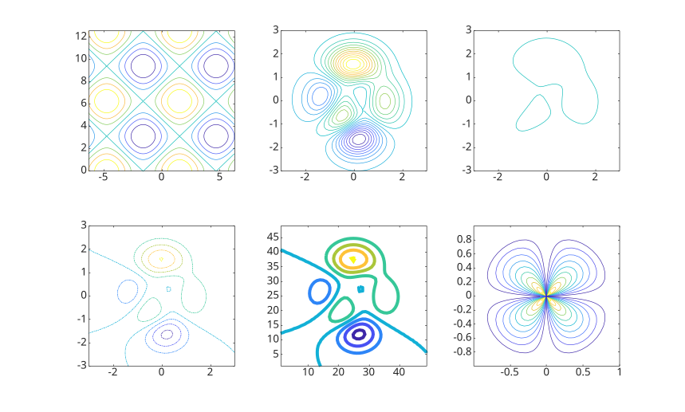
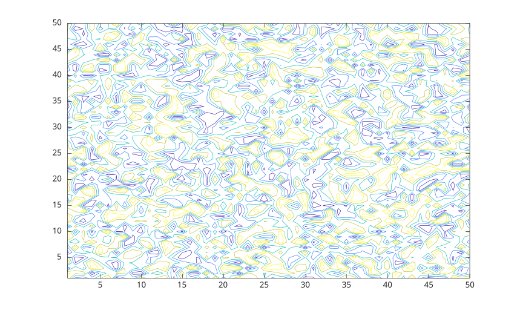
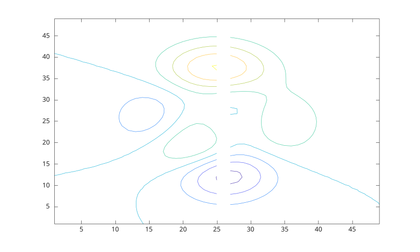

contour(Z)
contour(X, Y, Z)
contour(..., levels)
contour(..., LineSpec)
contour(ax, ...)
M = contour(...)
[M, h] = contour(...)
| Paramètre | Description |
|---|---|
| X | Coordonnées x : vecteur ou matrice. |
| Y | Coordonnées y : vecteur ou matrice. |
| Z | Coordonnées z : vecteur ou matrice. |
| levels | Niveaux de contours : scalaire ou vecteur. |
| LineSpec | Style et couleur de ligne |
| ax | Un objet graphique scalaire : conteneur parent, spécifié comme axes. |
| Paramètre | Description |
|---|---|
| M | Matrice de contours. |
| h | Un objet graphique : type contour. |
contour(Z) génère un tracé de contours représentant les isolignes de la matrice Z. Chaque isoligne correspond à une valeur de hauteur spécifique sur le plan x-y.
Nelson sélectionne automatiquement les lignes de contour à afficher en fonction des valeurs de Z. Les indices de colonnes et de lignes de Z servent respectivement de coordonnées x et y dans le plan.
contour(X, Y, Z) permet à l'utilisateur de spécifier les coordonnées x et y correspondant aux valeurs de la matrice Z. Cela permet un contrôle plus précis du positionnement du tracé de contours sur le plan x-y.
Les matrices X et Y fournissent les coordonnées, tandis que Z contient les valeurs de hauteur pour générer le tracé de contours.
Voir proprietes de contour pour la liste complete des proprietes.
f = figure();
subplot(2, 3, 1)
x = linspace(-2 * pi, 2 * pi);
y = linspace(0, 4 * pi);
[X, Y] = meshgrid(x, y);
Z = sin(X) + cos(Y);
contour(X, Y, Z);
subplot(2, 3, 2)
[X, Y, Z] = peaks;
contour(X, Y, Z, 20)
subplot(2, 3, 3)
[X, Y, Z] = peaks;
v = [1,1];
contour(X, Y, Z, v)
subplot(2, 3, 4)
[X, Y, Z] = peaks;
contour(X, Y, Z, '-.')
subplot(2, 3, 5)
Z = peaks;
[M, c] = contour(Z);
c.LineWidth = 3;
subplot(2, 3, 6)
[theta, r] = meshgrid (linspace (0,2*pi,64), linspace (0,1,64));
[X, Y] = pol2cart (theta, r);
Z = sin (2*theta) .* (1-r);
contour (X, Y, abs (Z), 10);
rng('default');
f = figure();
N = 50;
contour(1:N, 1:N, rand(N), 5) 
f = figure();
Z = peaks;
Z(:,26) = NaN;
contour(Z)
[X, Y, Z] = peaks;
[C, h] = contour(X, Y, Z);
clabel(C, h);| Version | Description |
|---|---|
| 1.3.0 | version initiale |
| 1.7.0 | Ajout des callbacks CreateFcn, DeleteFcn. |
| -- | Ajout de la propriete BeingDeleted. |